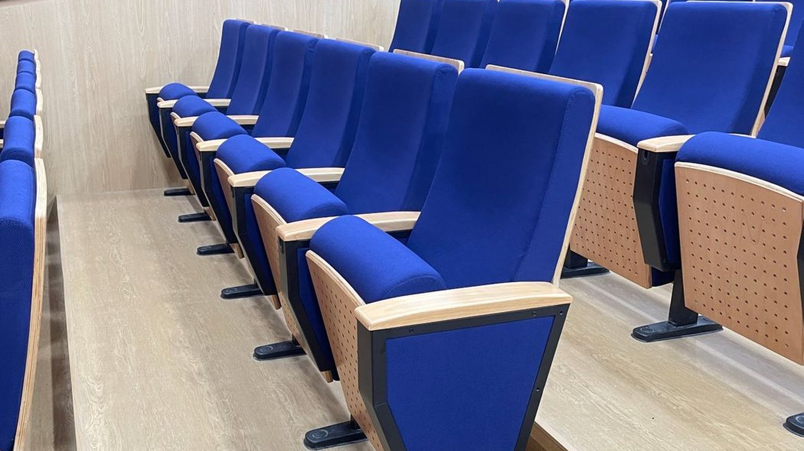

Cara Merawat Kursi Auditorium Agar Awet dan Tetap Rapi

Kursi auditorium dipakai banyak orang setiap hari. Perawatan rutin yang sederhana membantu kursi tetap nyaman dan terlihat rapi lebih lama.
Kabar baiknya, perawatan ini tidak rumit. Yang penting dilakukan teratur, terutama sebelum dan sesudah acara besar.
Memilih Kursi untuk Ruang Seminar: Apa yang Perlu Diperhatikan
1. Bersihkan Debu Secara Rutin
Debu menumpuk di lipatan pelapis, sandaran, dan celah antar kursi. Bersihkan secara berkala dengan penyedot debu atau sikat lembut.
2. Tangani Noda Secepatnya
Noda makanan dan minuman lebih mudah dibersihkan selagi masih baru. Langkahnya:
- Serap dulu cairan dengan kain bersih.
- Bersihkan dengan kain lembap.
- Hindari menggosok keras karena dapat merusak serat pelapis.
Pelapis kain dan pelapis kulit sintetis punya cara perawatan yang berbeda. Tanyakan petunjuk perawatan untuk model dan bahan yang Anda pakai, dan hindari cairan pembersih keras yang bisa memudarkan warna.
3. Periksa Bagian yang Bergerak
Dudukan lipat, engsel, dan meja tulis lipat adalah bagian yang paling sering dipakai. Periksa secara berkala apakah masih bergerak mulus, dan kencangkan baut yang mulai longgar.
4. Kebiasaan yang Menjaga Umur Pakai
Beberapa hal sederhana ini ikut menentukan awet tidaknya kursi:
- Pastikan kaki kursi tetap terpasang kuat di lantai.
- Laporkan dan perbaiki kursi yang goyang atau miring sejak awal, supaya kerusakannya tidak menjalar.
- Hindari berdiri di atas kursi.
- Jangan memberi beban berlebihan pada sandaran tangan dan meja tulis lipat.
Sedang mencari kursi auditorium untuk kebutuhan ruangan Anda? Cahaya Mustika Internesia siap membantu Anda menemukan kursi auditorium Zeco yang sesuai.
Hubungi customer service kami untuk konsultasi gratis mengenai pilihan model, ukuran, bahan, dan harga. Kami siap membantu Anda memilih kursi sesuai kebutuhan.
PT Cahaya Mustika InternesiaJl. Penjernihan II No.7, Bend. Hilir, Tanah Abang, Jakarta Pusat 10210 · Admin: +62 811-330-1819Wujudkan Auditorium yang Nyaman dengan Kursi yang Tepat
Ceritakan ukuran ruangan dan kebutuhan acara Anda. Kami bantu memilihkan model kursi auditorium Zeco yang sesuai dengan kebutuhan dan anggaran Anda.